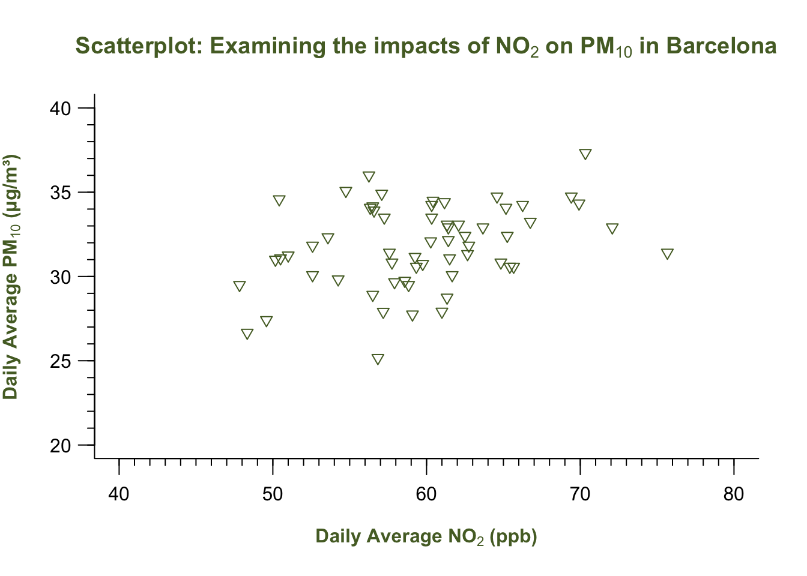

setwd("C:/Users/accountName/Desktop/GEOG0186/Week 5")Week 5: Examining Data III
1 Data Visualisation
1.1 Learning outcomes
Data visualisation helps geographers see patterns, trends, and relationships that are not immediately clear from tables or numbers. For instance, plotting rainfall against temperature might show a seasonal pattern, or visualising air pollution across cities could reveal urban–rural contrasts.
In R, data visualisation can be done using different libraries (e.g., ggplot2, tmap and many more), but Base R offers a powerful and flexible way to start — and it helps you understand what’s happening behind the scenes. The plot() function is the core tool for making quick, informative graphics in R.
By the end of this tutorial, you will be able to:
- Construct a plot from scratch using the
plot()function. We will focus a lot on coding a scatterplot. - Understand the syntax and arguments (i.e.,
expression(),xlab,ylab,main,xlim,ylimand many more) for fully customising a graphical plot - How to add elements to an existing plot which includes additional functions like major and minor ticks to the x-y axis using the
axis(), as well as control the boundary of the plot usingbox(), and incorporate a legend block in graph using thelegend()function to distinguish between groups. - Base R offers simple tools for visualising distributions - examples include
hist()andboxplot()which we had already covered. For the box plots, we will learn how to visualise multiple categories.
Warning
We will be using the following datasets, Barcelona_Air_Pollution_DayNight-Time_data.csv, for this week’s tutorial. You can download it from [HERE].
Instructions In your computer, do the following:
- Go to the folder named GEOG0186 - this should have already been created in Week 2
- Next, create a new sub-folder within GEOG0186 and rename it as Week 5.
- From the downloaded folder Dataset for Week 5, make sure to unzip and transfer ALL the datasets directly to the Week 5 folder.
1.2 Analysing air pollution data in Barcelona (Part III)
Last week, we learned how to summarise data using descriptive statistics such as measures of central tendency and variability. Now, we are going to create various plots to examine the relationship between nitrogen dioxide (NO₂) and particulate matter (PM₁₀) in Barcelona. Doing this type of analysis helps us visually explore the association between two air pollutants, identify possible trends or clusters, and better understand the patterns of air quality in the city.
The emphasis is building a plot from scratch and fully customising it. Alright, let’s begin!
1.2.1 Setting Working Directory & Reading a CSV File
Let us import for following dataset Barcelona_Air_Pollution_DayNight-Time_data.csv into RStudio, and call this object air_pollution_daily_data.
Setting the work directory should be second nature to you now at the point. Remember - always make sure that your work directory is linked to your folder containing your data.
For Windows:
For Macs:
setwd("/Users/accountName/Desktop/GEOG0186/Week 5")Now, import you the data set as follows:
air_pollution_daily_data <- read.csv("Barcelona_Air_Pollution_DayNight-Time_data.csv")
Note
Imported data contains daily measures (averaged) for Nitrogen Oxide and Particular Matter (10) for November from the 1s, up to the 30th, in 2018. The averaged measures for both air contaminants are categorised by time of observation i.e., Day-Time or Night-Time.
Building Block for Creating a Plot (Length: 00:52:57)
1.2.1.1 STEP 1: Start with a barebones plot
We begin by visualising the data using the plot() function without any customisation. This shows the basic relationship between daily average NO₂ and PM₁₀ concentrations in a form of scatterplot.
# Barebones scatterplot
plot(air_pollution_daily_data$NO2_Daily_Average, air_pollution_daily_data$PM10_Daily_Average)What is this code doing?
plot(x, y)draws a default scatterplot of two numeric vectors withNO2_Daily_Averagedrawn on the x-axis andPM10_Daily_Averagedrawn on the y-axis.- X-axis is
NO2_Daily_Average; and Y-axis isPM10_Daily_Average. - Default labels (i.e., variable names) as code and symbols are used and printed on the output.
- By default, no title is printed on the output.
1.2.1.2 STEP 2: Add axis labels and a title
Now we include the x-axis label, y-axis label, and an informative title using xlab, ylab, and main.
plot(air_pollution_daily_data$NO2_Daily_Average, air_pollution_daily_data$PM10_Daily_Average,
xlab = "Daily Average NO2 (ppb)",
ylab = "Daily Average PM10 (μg/m³)",
main = "Scatterplot: Examining the impacts of NO2 on PM10 in Barcelona"
)What is this code doing?
xlabandylabarguments in theplot()function sets human-readable axis titles (units included). Note that it still plain text (NO₂ and PM₁₀ are not yet typeset chemically with the appropriate subscript!).mainadds a descriptive title so the plot is self-contained.
1.2.1.3 STEP 3: Scientific typesetting with subscripts
For scientific notation (e.g., NO₂ and PM₁₀), we can use the expression() function wrapped around the whole text, and then apply the subscript notation [ ]* to the piece of text we want to render as a subscript.
# Adding subscripts to axis labels
plot(air_pollution_daily_data$NO2_Daily_Average, air_pollution_daily_data$PM10_Daily_Average,
xlab = expression("Daily Average NO"[2]*" (ppb)"),
ylab = expression("Daily Average PM"[10]*" (μg/m³)"),
main = expression("Scatterplot: Examining the impacts of NO"[2]*" on PM"[10]*" in Barcelona")
)What is this code doing?
expression()lets R render block of text - particularly useful for maths notation.- Use the square brackets
[ ]on text/number to make it a subscript: e.g.,"NO"[2]" -> NO₂. *concatenates text/math parts insideexpression()(no space added unless in quotes).
1.2.1.4 STEP 4: Emphasise labels with bold
What about making the labels boldface? You can wrap the text labeling with the bold() function inside the expression() code. For example:
plot(air_pollution_daily_data$NO2_Daily_Average, air_pollution_daily_data$PM10_Daily_Average,
xlab = expression(bold("Daily Average NO"[2]*" (ppb)")),
ylab = expression(bold("Daily Average PM"[10]*" (μg/m³)")),
main = expression(bold("Scatterplot: Examining the impacts of NO"[2]*" on PM"[10]*" in Barcelona"))
)What is this code doing?
bold(...)(inside expression) renders that text in bold. You can use for titles/labels you want to stand out in reports or slides.- There are other functions like
bolditalic()which you can experiment with in your own time. - An important note -
bold()orbolditalic()can only work insideexpression()function.
1.2.1.5 STEP 5: Control the axis limits
You can use the following arguments - ylim and xlim to control the y- and x-axis, respectively. Before setting axis limits, check the data range with summary() function to have an idea of the minimum and maximum value to inform how you will do the set-up for this.
summary(air_pollution_daily_data$NO2_Daily_Average) Min. 1st Qu. Median Mean 3rd Qu. Max.
47.83 56.50 60.01 59.69 62.69 75.67 summary(air_pollution_daily_data$PM10_Daily_Average) Min. 1st Qu. Median Mean 3rd Qu. Max.
25.17 30.46 31.83 31.81 33.96 37.33 Based on the printed output - we will set the limits of our y-axis to be between 20 to 40 for the NO₂ and PM₁₀; while for NO₂, it can be set between 40 to 80 for the x-axis for ylim and xlim arguments in the plot() function, respectively.
plot(air_pollution_daily_data$NO2_Daily_Average, air_pollution_daily_data$PM10_Daily_Average,
xlab = expression(bold("Daily Average NO"[2]*" (ppb)")),
ylab = expression(bold("Daily Average PM"[10]*" (μg/m³)")),
main = expression(bold("Scatterplot: Examining the impacts of NO"[2]*" on PM"[10]*" in Barcelona")),
ylim = c(20, 40),
xlim = c(40, 80)
)1.2.1.6 STEP 6: Adjust the plot frame
You can use bty argument in the plot() function to change which outer sides of the box/frame are drawn. The following options are:
| Option | Frame drawn |
|---|---|
"o" |
complete box (default) |
"n" |
no box |
"7" |
top + right |
"L" |
bottom + left (recommended for clean visuals) |
Trust me on this… just pick "L" always! Anything else makes the plot look funky!
# add "bty=..." to control the outer frame/box type of plot
plot(air_pollution_daily_data$NO2_Daily_Average, air_pollution_daily_data$PM10_Daily_Average,
xlab = expression(bold("Daily Average NO"[2]*" (ppb)")),
ylab = expression(bold("Daily Average PM"[10]*" (μg/m³)")),
main = expression(bold("Scatterplot: Examining the impacts of NO"[2]*" on PM"[10]*" in Barcelona")),
ylim = c(20, 40),
xlim = c(40, 80),
bty = "L"
)What is this code doing?
bty = "L"draws a minimalist L-shaped frame (bottom + left), which is a clean, modern look that reduces clutter.
1.2.1.7 STEP 7: Adjusting the symbology of plot
The pch= argument in plot() controls the symbology of points in the scatterplot. It contains up to 25 different symbols which are selectable from 1-25 (see above image). Here, we are choosing the 25th symbol which is a triangle.
# Controlling the symbol type
plot(air_pollution_daily_data$NO2_Daily_Average, air_pollution_daily_data$PM10_Daily_Average,
xlab = expression(bold("Daily Average NO"[2]*" (ppb)")),
ylab = expression(bold("Daily Average PM"[10]*" (μg/m³)")),
main = expression(bold("Scatterplot: Examining the impacts of NO"[2]*" on PM"[10]*" in Barcelona")),
ylim = c(20, 40),
xlim = c(40, 80),
bty = "L",
pch = 25
)
What is this code doing?
pchchooses the plotting character (symbol).- Tip: Shapes 21–25 can be filled; include the argument
bg=to set the fill colour of shape andcol=for the outline.
1.2.1.8 STEP 8: Adjusting the label orientation on XY axis
The las argument in the plot() function controls the overall orientation of the numbers labelled on the ticks of BOTH axes.
| Value | Orientation |
|---|---|
| 0 | parallel to the axis |
| 1 | horizontal |
| 2 | perpendicular |
| 3 | vertical |
At the moment, the orientation is parallel i.e., the numbers on the y-axis are parallel to the axis itself. We want it to be horizontal akin to how the values are already oriented on the x-axis.
plot(air_pollution_daily_data$NO2_Daily_Average, air_pollution_daily_data$PM10_Daily_Average,
xlab = expression(bold("Daily Average NO"[2]*" (ppb)")),
ylab = expression(bold("Daily Average PM"[10]*" (μg/m³)")),
main = expression(bold("Scatterplot: Examining the impacts of NO"[2]*" on PM"[10]*" in Barcelona")),
ylim = c(20, 40),
xlim = c(40, 80),
bty = "L",
pch = 25,
las = 1
)1.2.1.9 STEP 9: Customise colours
You can control the overall colour scheme for points, titles, and axis labels with col, col.main and col.lab, respectively:
# add colour to pooints
# add colour to main title
# add colour to axis title
plot(air_pollution_daily_data$NO2_Daily_Average, air_pollution_daily_data$PM10_Daily_Average,
xlab = expression(bold("Daily Average NO"[2]*" (ppb)")),
ylab = expression(bold("Daily Average PM"[10]*" (μg/m³)")),
main = expression(bold("Scatterplot: Examining the impacts of NO"[2]*" on PM"[10]*" in Barcelona")),
ylim = c(20, 40),
xlim = c(40, 80),
bty = "L",
pch = 25,
las = 1,
col = "darkolivegreen",
col.main = "darkolivegreen",
col.lab = "darkolivegreen"
)1.2.1.10 STEP 10: Full axis control - custom major & minor ticks
Here, we want to add major and minor ticks to the graph for it to look professional. We remove the default axes and redraw them manually with both major and minor ticks using the axis(). This is a function that works outside of plot().
There is extreme flexibility in how you can code a plot up!
# Remove the default axes for full control by adding `axes = FALSE` in the `plot()`
plot(air_pollution_daily_data$NO2_Daily_Average, air_pollution_daily_data$PM10_Daily_Average,
xlab = expression(bold("Daily Average NO"[2]*" (ppb)")),
ylab = expression(bold("Daily Average PM"[10]*" (μg/m³)")),
main = expression(bold("Scatterplot: Examining the impacts of NO"[2]*" on PM"[10]*" in Barcelona")),
ylim = c(20, 40),
xlim = c(40, 80),
bty = "L",
pch = 25,
las = 1,
col = "darkolivegreen",
col.main = "darkolivegreen",
col.lab = "darkolivegreen",
axes = FALSE
)
# Here, we have full control of the x-axis - add the major ticks
axis(1, at = seq(40, 80, by = 10), labels = seq(40, 80, by = 10), tcl = -0.7)
# Here, we have full control of the y-axis - add the major ticks
axis(2, at = seq(20, 40, by = 5), labels = seq(20, 40, by = 5), las = 1, tcl = -0.7)
# Again, full control of the x-axis - add the minor ticks
axis(1, at = seq(40, 80, by = 1), labels = FALSE, tcl = -0.3)
# Again, full control of the y-axis - add the minor ticks
axis(2, at = seq(20, 40, by = 1), labels = FALSE, tcl = -0.3)
# Add "L" box back
box(bty = "L")
What is this code doing?
axes = FALSEsuppresses the default axes so you can rebuild them.axis(1, ...),axis(2, ...)draw the bottom (x) and left (y) axes, respectively.atsets tick positions, where we draw a sequence of numbers starting from 40 to 80 at intervals of 10 on the x-axis using theseq(). A similar operation is carried out on y-axis.labelscontrols tick label text where we apply the sequence on numbers to break axis accordingly with the ticks;tclsets tick length (negative points outward).- Unlike the Major ticks, the Minor ticks have
labels = FALSEwhere we don’t apply the numbers to avoid clutter. box(bty = "L")simply redraws the minimalist “L-shaped” frame.
1.2.1.11 STEP 11: Map colours & shapes to distinguish categories to produce a Legend
We can now distinguish day-time and night-time observations using colour and symbol differences. This will be involve some simple brute force coding to define the list of categories and map them to a symbol and colour:
# Define categories for legend
categories <- c("Day-time", "Night-time")
# Map categories to colours and shapes automatically
colours <- c("lightblue", "grey")[as.factor(air_pollution_daily_data$DayType)]
shapes <- c(25, 17)[as.factor(air_pollution_daily_data$DayType)]Here, we converting the list of categorical string labels into a factor as 1 = "Day-Time" and 2 = "Night-Time", and then map the colour scheme of lightblue to 1 and grey to 2. We are also mapping the symbology of 25 to 1, and 17 to 2.
We insert these objects into the plot() for pch, bg and col to show the distinction between points based on category.
Lastly, we add the legend() outside of the plot() function.
# Final customised plot
plot(air_pollution_daily_data$NO2_Daily_Average, air_pollution_daily_data$PM10_Daily_Average,
xlab = expression(bold("Daily Average NO"[2]*" (ppb)")),
ylab = expression(bold("Daily Average PM"[10]*" (μg/m³)")),
main = expression(bold("Scatterplot: Examining the impacts of NO"[2]*" on PM"[10]*" in Barcelona")),
ylim = c(20, 40),
xlim = c(40, 80),
bty = "L",
pch = shapes,
bg = colours,
col = colours,
las = 1,
col.main = "darkolivegreen",
col.lab = "darkolivegreen",
axes = FALSE
)
# Add Major ticks
axis(1, at = seq(40, 80, by = 10), labels = seq(40, 80, by = 10), tcl = -0.7)
axis(2, at = seq(20, 40, by = 5), labels = seq(20, 40, by = 5), las = 1, tcl = -0.7)
# Add Minor ticks
axis(1, at = seq(40, 80, by = 1), labels = FALSE, tcl = -0.3)
axis(2, at = seq(20, 40, by = 1), labels = FALSE, tcl = -0.3)
# Add box back
box(bty = "L")
# Add legend
legend("topright", legend = categories, bty = "n",
pch = c(25, 17),
col = c("lightblue", "grey"),
pt.bg = c("lightblue", "grey"),
title = expression(bold("Observation Type")))
Note
INTERPRETATION: The scatterplot shows the relationship between the two air pollution contaminants. By ‘eye-balling’ this, it seems that increasing levels of Nitrogen Dioxide increases the particular matter (10) as well. It is difficult to say however, without performing an evidence-based test like Correlation or a Linear Regression - which is a story for another day (i.e., Week 8).
That’s how you build a graph! You have now been exposed to making a boxplot(), hist() and scatterplot through plot(). Let’s do a final stretch with the boxplots - when dealing with multiple categories!
1.2.2 Box plotting
Suppose we want to visual the distribution of these contaminants broken down by day/night-time. Instead of plotting them separately, you can use the ~ sign to achieve the breakdown.
Box plot for NO2:
boxplot(air_pollution_daily_data$NO2_Daily_Average ~ air_pollution_daily_data$DayType,
col = c("lightblue", "grey"),
main = expression(bold("NO"[2]*" Concentrations")),
ylab = expression(bold("Concentration (μg/m³)")),
xlab = ""
)Box plot for PM10:
boxplot(air_pollution_daily_data$PM10_Daily_Average ~ air_pollution_daily_data$DayType,
col = c("lightblue", "grey"),
main = expression(bold("PM"[10]*" Concentrations")),
ylab = expression(bold("Concentration (μg/m³)")),
xlab = ""
)If you want to visual the pair of images side-by-side, you can use the par(mfrow = c(1,2)) code creates a grid with 2 columns to place each boxplot inside:
par(mfrow = c(1, 2))
boxplot(air_pollution_daily_data$NO2_Daily_Average ~ air_pollution_daily_data$DayType,
col = c("lightblue", "grey"),
main = expression(bold("NO"[2]*" Concentrations")),
ylab = expression(bold("Concentration (μg/m³)")),
xlab = ""
)
boxplot(air_pollution_daily_data$PM10_Daily_Average ~ air_pollution_daily_data$DayType,
col = c("lightblue", "grey"),
main = expression(bold("PM"[10]*" Concentrations")),
ylab = expression(bold("Concentration (μg/m³)")),
xlab = ""
)
Warning
When using this code, par(mfrow = c(1, 2)). Your plot window is split into 2 grids, and that setting will remain like that until explicitly tell RStudio remove it. You can overide this setting by running the following code:
# reset plot layout
par(mfrow = c(1, 1))2 Worksheet Two: Descriptive Analysis
In this worksheet, we will put into practice some of the basics we learned in Examining Data I, II and III. The aim of this worksheet is that you are tasked with conducting explorative analysis of the unemployment rates across the 73 Spanish neighbourhoods in Barcelona.
- Use the techniques to provide the overall summary measures of the unemployment rates and provide an appropriate interpretation of this variable.
Hints: Consider using the following functions:
summary()andsd().- The interpretation should be all-rounded which includes the appropriate central tendency measure, a measure about how dispersed the records are and the appropriate range values.
- Compare the unemployment rates between neighbourhoods within the following two selected districts: Horta-Guinardo and Nou Barris. Provide the following answers:
- 3 to 5 lines of code chunks which shows how you would go about filtering the neighbourhoods to the two selected Districts
- A comparative interpretation of the unemployment rates based on summary measures using these two neighbourhoods
- Produce a dual boxplot to represent the second point graphically.
Important
Please download both the dataset and answer sheet HERE. You can use the Answer sheet for task 2 to insert your answers into the appropriate sections. Please note that this Worksheet 2, in particular (along with Worksheets 1 and 3) will only be assessed in-person, and so feedback will be given in-person. Whereas Worksheets 4 and 5 - London Air Quality - will be formatively marked accordingly. You need to submit at least 2 (out of 5) QSkills worksheets in your final portfolio.